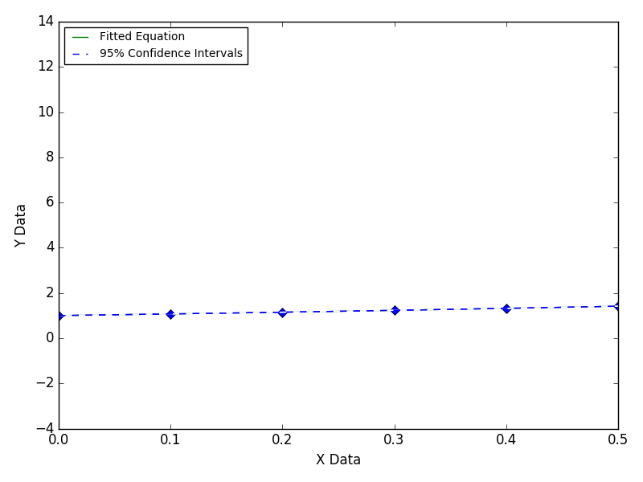
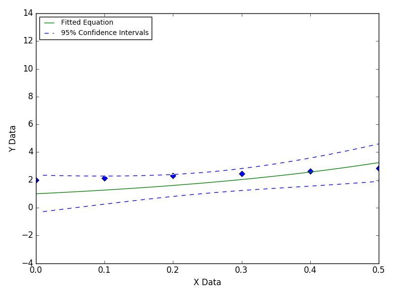
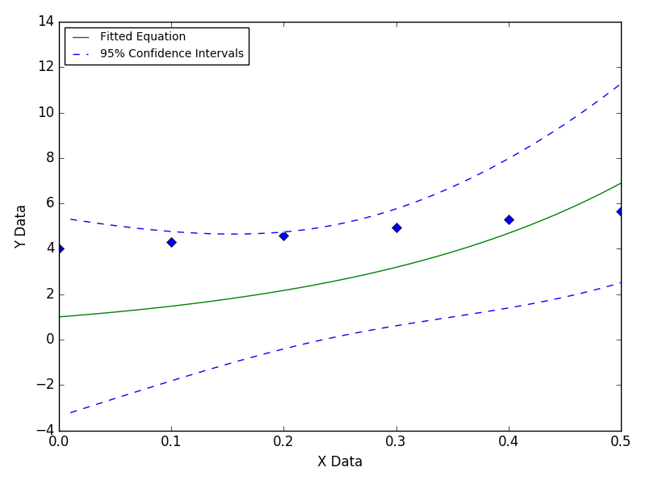

Equation Missing An Offset
This illustrates the effect of fitting data with an offset to an equation that does not have one.
This can be caused by experimental equipment introducing bias (such as a DC offset) during data acquisition. Fitting the data to an equation with an offset will reveal the bias.
Still Images


